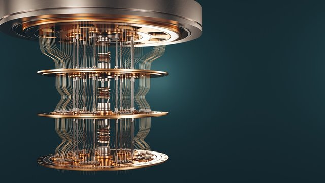

-
Introduction
Quantum principles form the foundation of a remarkable branch of physics that challenges our classical understanding of the universe. Exploring the behavior of particles at the smallest scales, quantum mechanics reveals the intriguing phenomena of superposition and entanglement. Superposition allows particles to exist in multiple states simultaneously, while entanglement creates a mysterious connection between particles, even when separated by vast distances. These principles underpin the extraordinary potential of quantum technologies, promising unprecedented computational power and revolutionary advancements in various fields of science and technology.
-

-
-
Quantum Supermacy and Quantum Advantage
Quantum computers possess several advantages that can revolutionize the field of computing. Their enhanced computational power, achieved through the principles of superposition and entanglement, allows them to solve complex problems more efficiently than classical computers. With the ability to perform calculations at unprecedented speeds, quantum computers excel in optimization, simulation of quantum systems, and factoring large numbers. Their parallel processing capabilities enable them to handle massive amounts of data and execute multiple computations simultaneously. Quantum computers also have the potential to disrupt cryptography, rendering current encryption methods vulnerable, while advancing drug discovery, materials science, and optimization tasks. Furthermore, they enable quantum simulations, shedding light on complex quantum phenomena
-
Quantum Computing Algorithms
Applications such as simulating complicated quantum systems or solving large-scale linear algebra problems are very challenging for classical computers, owing to the extremely high computational cost. Quantum computers promise a solution, although fault-tolerant quantum computers will probably not be available in the near future. Current quantum devices have serious constraints, including limited numbers of qubits and noise processes that limit circuit depth .Problems that are fundamentally unsolvable by classical algorithms cannot besolved by quantum algorithms either. The added value of quantum algorithms is that they can solve some problems significantly faster than classical algorithms. The best-known example is Shor’s algorithm which is a quantum algorithm for integer factorization. Simply put, when given an integer N, it will find its prime factors. It can solvethis problem exponentially faster than the best-known classical algorithm can. another examples of quantum algorithms are Grover's algorithm and Simon's Algorithm
-
-
-
Quantum Hardware Components
Qubits are the basic units of the quantum memory which, in contrast to classical bits that can be either 0 or 1, can hold both 0 and 1 state thanks to superposition. For example, 8 classical bits are enough to represent any number between 0 and 255. On the other hand 8 qubits can represent all numbers between 0 and 255 at the same time.
Semiconducting material Qubits can be simulated by manipulating individual electrons in semiconducting materials such as selenium or germanium, or defected materials such as diamonds, aluminum nitride or silicon carbide.
SuperConducting Materials Superconducting qubit systems are controlled using microwave and low-frequency electrical signals, both of which are communicated through wires that run into cooling refrigerators to reach the qubits inside the controlled environment. In 2018, Intel announced the construction of a 49 qubit superconducting chip called Tangle Lake.
-
Quantum Simulating and Annealing
1.Quantum Annealing Quantum Annealing is essentially a way to use quantum’s intrinsic effects to find the best solution to problems involving a wide range of solutions. The types of problems it solves are either related to optimization or probabilistic sampling. Optimization is a problem where we try to find the best configuration out of many different possible combinations. The reason why physics can be used to solve optimization problems is based on the notion that minimum energy states correspond to local minima. Quantum annealing, therefore, uses quantum physics to find the minimum energy state. Quantum annealing starts at the lowest energy eigenstate of the initial Hamiltonian. When we anneal, we are introducing the Hamiltonian problem, which involves biases and couplers. The annealing process then reduces the effect of the initial Hamiltonian as it evolves. At the end of the annealing process, the final state will correspond to an eigenstate of the Hamiltonian problem.
-
-
-
Super Computers
A supercomputer is a highly powerful computing system designed to handle complex problems requiring massive computational capabilities. Its defining features include:
1. Processing Power: It contains numerous powerful processors or cores for parallel processing.
2. High-Speed Interconnects: Advanced networks facilitate fast communication and data exchange between processors.
3. Massive Data Storage: Supercomputers have large storage systems with high-speed access to accommodate large datasets.
4. Specialized Architecture: They may include specialized processors or accelerators tailored for specific types of computations.
5. Scalability: Supercomputers can be expanded by adding more processors or nodes to increase computational power.
6. Cooling and Power: Advanced cooling systems and robust power infrastructure are necessary to handle the high heat and energy requirements.
-
Quantum Computers vs. SuperComputers
Supercomputers cannot compare to the speed and power of quantum computers. Because they can handle several computations at once, they are perfect for handling challenging issues that call for processing enormous amounts of data efficiently. Supercomputers can handle a greater variety of jobs, but they can only handle one at a time.But, when we explicitly contrast them, it becomes a semantic argument that quantum computers could be referred to as a subset of supercomputers. Similar to supercomputers, quantum computers are anticipated to excel at a single activity rather than displace conventional desktop and laptop computers.
-
-
-
Quantum Algorithms for SuperComputers
Quantum-inspired algorithms emulate quantum computing principles on classical supercomputers to solve complex problems more efficiently. These algorithms draw inspiration from quantum mechanics and leverage concepts like quantum annealing and optimization to address tasks such as optimization, simulation, and machine learning. They provide a bridge between classical and quantum computing, offering potential performance improvements for classical systems. Also, like quantum annealing-inspired algorithms, there are Quantum-inspired optimization algorithms. They leverage concepts such as superposition and tunneling to efficiently solve complex optimization problems. By emulating quantum annealing, these algorithms provide a promising approach for finding optimal solutions and have applications across various fields, including finance, logistics, and machine learning.
-
Quantum Computing and Data Security
Quantum computing (QC) represents the biggest threat to data security in the medium term,Current encryption methods, such as RSA and Elliptic Curve Cryptography (ECC), rely on the difficulty of certain mathematical problems, such as prime factorization and discrete logarithms, for their security. However, quantum computers can potentially solve these problems efficiently using algorithms like Shor's algorithm. With quantum computing capabilities having advanced from the realm of academic exploration to tangible commercial opportunities, now is the time to take steps to secure everything from power grids and IoT infrastructures. In this context, quantum cryptography and post-quantum cryptography have emerged as areas of active research to address these vulnerabilities.
-
-
-
Quantum Computing in Industry
1- Quantum computing in finance and optimization problems : Quantum computing has transformative potential in finance and optimization, revolutionizing areas like portfolio management and risk analysis. Its capacity to handle large datasets and complex calculations simultaneously can lead to more accurate predictions and improved trading strategies. Quantum algorithms, such as QAOA, offer efficient solutions to NP-hard problems, enhancing financial decision-making processes.
2- Quantum machine learning and pattern recognition : Quantum machine learning combines quantum computing and machine learning to transform pattern recognition. It harnesses quantum algorithms and data processing capabilities to improve feature extraction, classification accuracy, and the efficiency of processing complex patterns. This has significant implications for applications like image and speech recognition. -
Future Outlook and Challenges
There are several studies outlooking the following challeges:
- Increasing qubit count for more powerful quantum computers.
- Focus on error correction and fault-tolerant quantum computation.
- Hybrid quantum-classical approaches to leverage the strengths of both types of computing.
- Qubit Stability: Enhancing qubit coherence times and mitigating sources of decoherence.
- Scalability: Scaling up the number of qubits through scalable qubit architectures and new platforms.
- Quantum Algorithms: Discovering efficient quantum algorithms for applications like simulation, optimization, and machine learning. -
Check our Animated Video
Here's an explanatoy animated Video that facilitates the understanding of quantum Computing
Thank You
This research is Presented to: Dr. Fadia Taher
Done By:
Dima Azzam 6302
Ghina Moussa 6491
Omar Eid 6451
Mariam Farhat 6503
Omar AlSayegh 6761